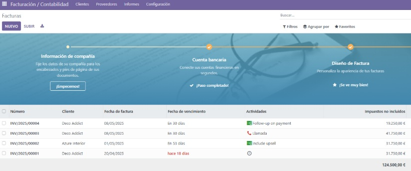
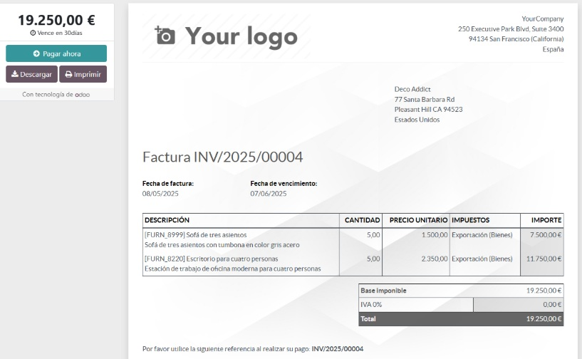

Modulo - Facturación
El módulo de Facturación permite generar y gestionar facturas de manera automática a partir de ventas o compras.
¿Cómo se usa?
- Se accede al módulo Facturación desde el panel principal.
- Al confirmar un pedido de venta, se genera una factura automáticamente.
- Las facturas se pueden enviar por correo o descargar en PDF.
- Odoo permite configurar métodos de pago, impuestos y ver el estado de cobro.
Listado de facturas:

Factura generada:

¿Por qué lo elegimos?
Automatiza la contabilidad, mejora el control financiero y reduce errores. Es clave para llevar una gestión clara de ingresos y pagos.
↑